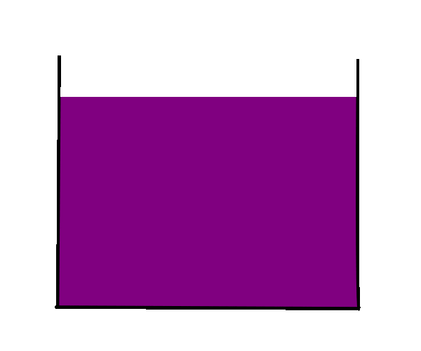
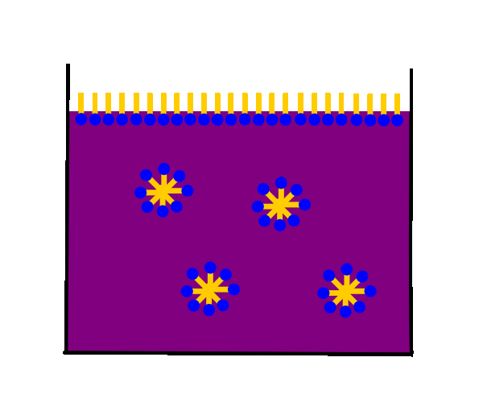
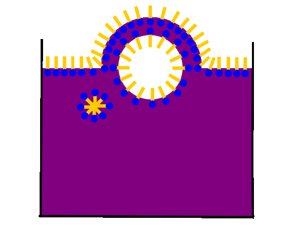
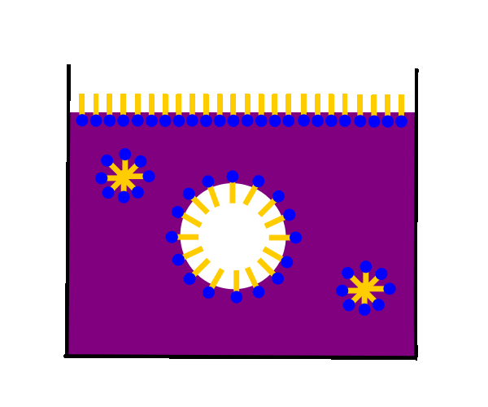

Zwischen den Wassermolekülen der wässrigen Phase wirken
starke Wasserstoffbrückenbindungen.

Gibt man viel Tensid in Wasser, so wird nicht nur die Grenzfläche
Wasser/Luft mit Tensidmolekülen besetzt, sondern es bilden sich auch
kleine Tensidmolekül Zusammenlagerungen, sogenannte Micellen
(Vgl. auch Phasengemische > Bildung von Micellen).
Wird nun ein Luftbläschen als hydrophobe Phase in die Tensid-Lösung
gepustet, so ordnen sich Tensidmoleküle an der Luft/Wasser-Grenzschicht
an und stabilisieren die Luftblase.

Steigt die Luftblase auf, so bildet sich aus der oberen
Luft/Wasser-Grenzschicht und der Luft/Wasser-Grenzschicht der
Luftblase eine Wasser-Tensid-Doppelschicht aus.
Bei dieser liegen die polaren Kopfgruppen nach innen der wässrigen,
und die unpolaren Schwanzgruppen nach außen der lipophilen Luftphase zugewandt.

Bei ausreichender Tensid-Menge kann sich die Wasser/Tensid-Doppelschicht
vollständig von der oberen Luft/Wasser-Grenzschicht ablösen und es
entsteht eine frei schwebende Seifenblase.
Reißt diese an einer Stelle auf, so trennen sich die in der
Membran artigen Hülle vorhandenen Tensid- und Wassermoleküle
schlagartig voneinander und die Blase platzt.